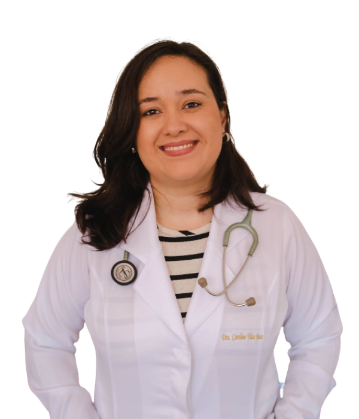

Antes de nascer
Pré-natal pediátrico no terceiro trimestre, com orientações para a chegada do bebê.
Da gestação à adolescência, um acompanhamento próximo, humano e atento às necessidades de cada família.

Orientação e acompanhamento individualizado para as pequenas e grandes mudanças da vida.
Pré-natal pediátrico no terceiro trimestre, com orientações para a chegada do bebê.
Acompanhamento de recém-nascidos e prematuros, com apoio à amamentação.
Puericultura, introdução alimentar, orientação vacinal e desenvolvimento.
Acompanhamento da saúde e do desenvolvimento até os 17 anos.
Além das consultas de rotina, a avaliação pediátrica ajuda a investigar sintomas e definir a conduta adequada para cada criança.
 Dra. Caroline Campos Vilas Boas
Dra. Caroline Campos Vilas BoasSou pediatra e acompanho famílias há mais de dez anos. Minha atuação une conhecimento científico, prevenção e atenção às particularidades de cada criança.
Acredito em consultas que ajudam os responsáveis a compreender as necessidades dos filhos e participar ativamente dos cuidados com a saúde.
Experiência em urgência e emergência pediátrica em Salvador, com atuação profissional registrada nos hospitais de Brotas, Tereza de Lisieux e Manoel Vitorino.
Publicações científicas sobre infecções respiratórias e bacteremia na infância (2012 e 2020).
Consultar currículo profissionalO atendimento considera a história, os hábitos e as necessidades de cada paciente.
A consulta reserva tempo para conhecer o histórico de saúde, a rotina e as dúvidas da família.
Exame físico e avaliação do desenvolvimento, com exames complementares quando indicados.
Orientações individualizadas sobre prevenção, imunização, cuidados e tratamento, quando necessário.
Consultório no Itaigara, em Salvador, pensado para receber crianças e suas famílias.


Aquarela Pediatria Integrada
Av. Antônio Carlos Magalhães, 585 · Edifício Louis Pasteur, sala 501
Itaigara, Salvador, BA · CEP 41825-000
Nos relatos publicados, as famílias destacam a atenção durante a consulta, as explicações detalhadas e a escuta cuidadosa.
O pré-natal pediátrico é oferecido no terceiro trimestre da gestação. Após o nascimento, o atendimento acompanha crianças e adolescentes de 0 a 17 anos.
Sim. Consulte a disponibilidade da modalidade online na Doctoralia ou com a equipe.
O atendimento é particular. Para consultas presenciais e online, a médica informa que fornece documentação para solicitar reembolso ao plano de saúde ou dedução no imposto de renda, conforme as regras aplicáveis. Consulte seu plano sobre a cobertura.
Para atendimento presencial, a Doctoralia informa pagamento por PIX, cartão de crédito, cartão de débito e dinheiro. Confirme as condições com a equipe.
Na Aquarela Pediatria Integrada, Avenida Antônio Carlos Magalhães, 585, Edifício Louis Pasteur, sala 501, Itaigara, Salvador.
Você pode entrar em contato pelo WhatsApp ou consultar os horários disponíveis na Doctoralia.
Agende uma consulta e conheça o atendimento da Dra. Caroline.